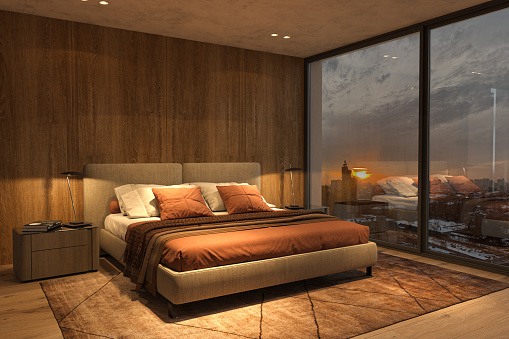
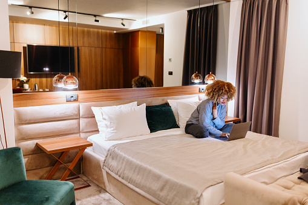
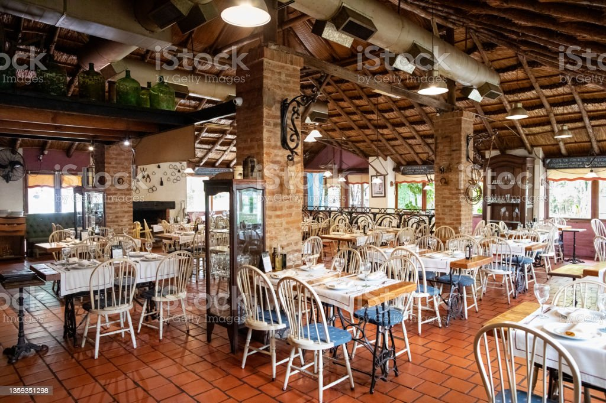
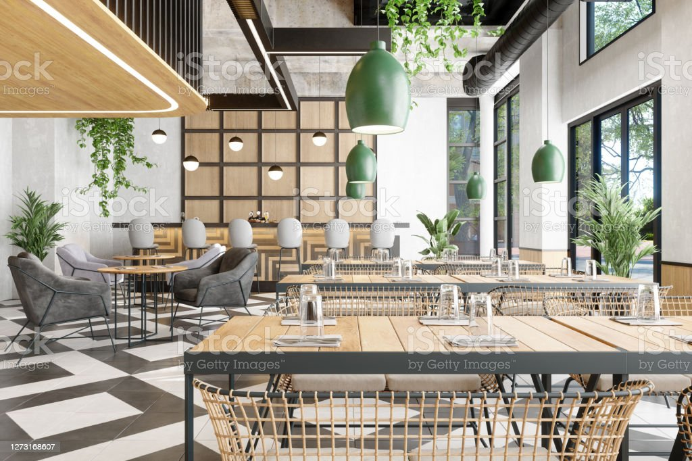

A Contemporary five star hotel in Westlands
- Privileged Westlands location
- Six world-class bars and restaurants
- 168 spacious, beautifully appointed rooms
- Magnificent rooftop pool
- Multi-fuctional meeting spaces
BRIEF HISTORY
Recharge in spacious rooms and suites that offer indulgent bedding, marble bathrooms, smart TVs, ergonomic workstations and free W-Fi. Guests in concierge-level rooms and suites enjoy access to exclusive Club amenities. Indulge in delicious cuisine, including mouthwatering steakhouse fare and savor every sip at our unforgettable rooftop bar. Take advantage of our modern gym, rooftop pool and free parking. Those planning events will be delighted by our hotel's contemporary indoor and picture-perfect outdoor venues. A blissful stay awaits at Sankara Nairobi, Autograph Collection.

“Awesome food, incredible service, and such a big variety of grilled meats and salads to try."